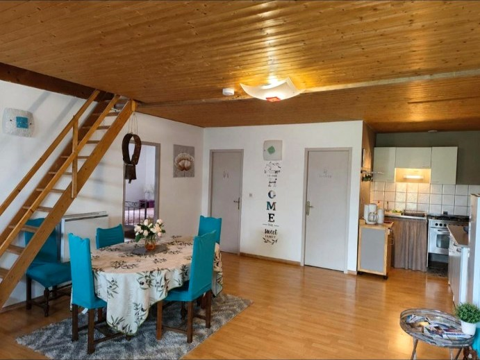
Salon et salle à manger
Espace convivial pour partager les repas et se retrouver.
Près de Lavaur, dans le Tarn, La Datcha vous accueille dans un cadre verdoyant, où l’on prend plaisir à ralentir, à partager un repas et à profiter des beaux jours.
Une maison de vacances conviviale, avec des espaces chaleureux pour se retrouver après une journée de découvertes.
Deux chambres, une mezzanine, un salon avec canapé convertible et une cuisine équipée. Lit d’appoint et lit parapluie disponibles sur demande. La capacité maximale dépend de la configuration choisie et doit être confirmée lors de la réservation.

Espace convivial pour partager les repas et se retrouver.
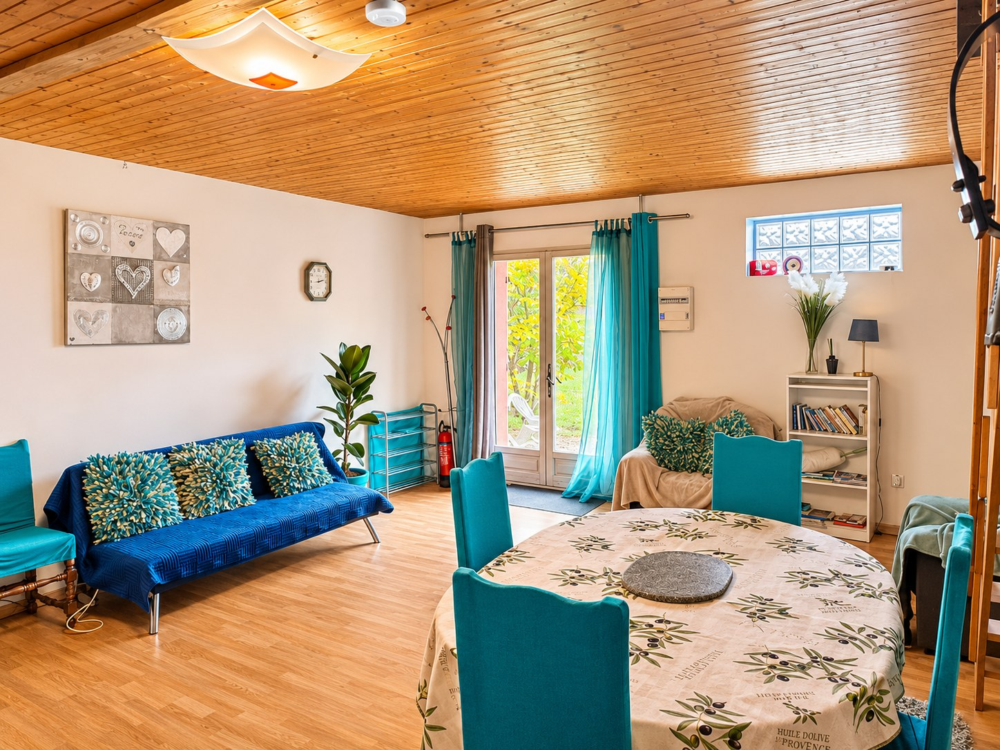
Un coin détente avec canapé convertible et accès au jardin. Ici, pas de télévision : le spectacle est dehors !
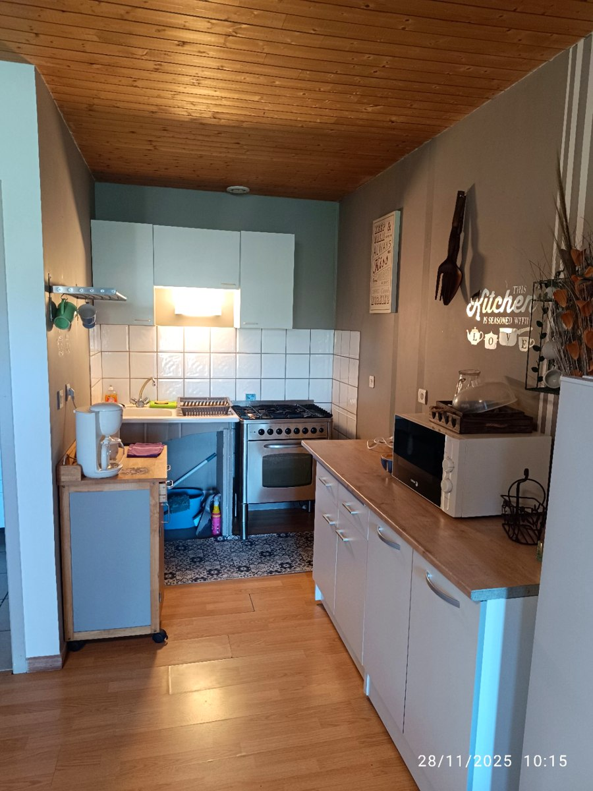
Cuisine avec cuisinière, four, micro-ondes et cafetière pour préparer vos repas.
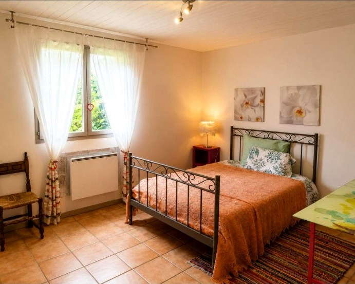
Un lit double, une table et des rangements.
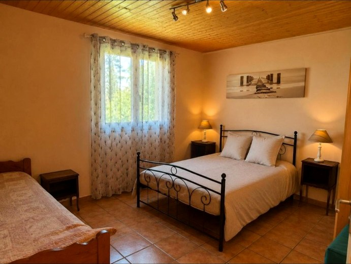
Un lit double, un lit simple et des rangements.
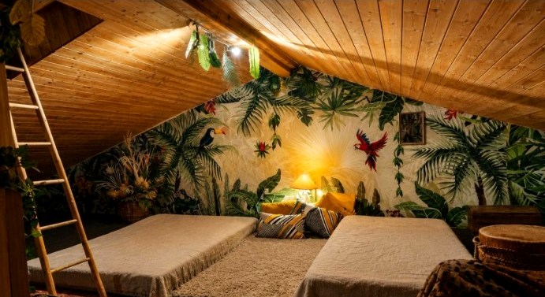
Deux futons individuels, dans un espace chaleureux sous les poutres.
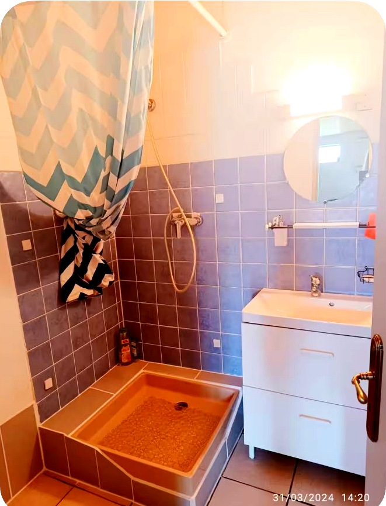
Une douche avec receveur, rideau de douche et lavabo : tout simplement, sans douche à l’italienne.
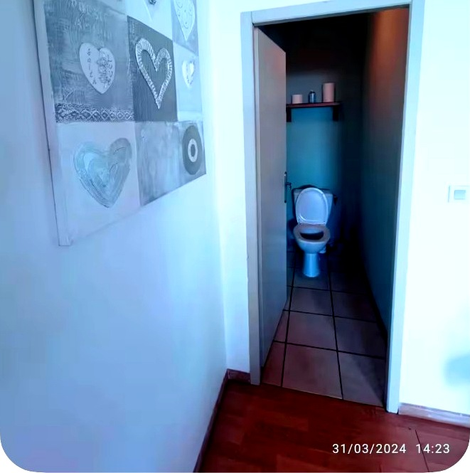
Des toilettes indépendantes de la salle d’eau.
Arbres, fleurs et coins de verdure composent le décor de vos vacances, au fil des saisons.
Une maison de campagne entourée de verdure, pour profiter des repas dehors, du barbecue et des soirées tranquilles.
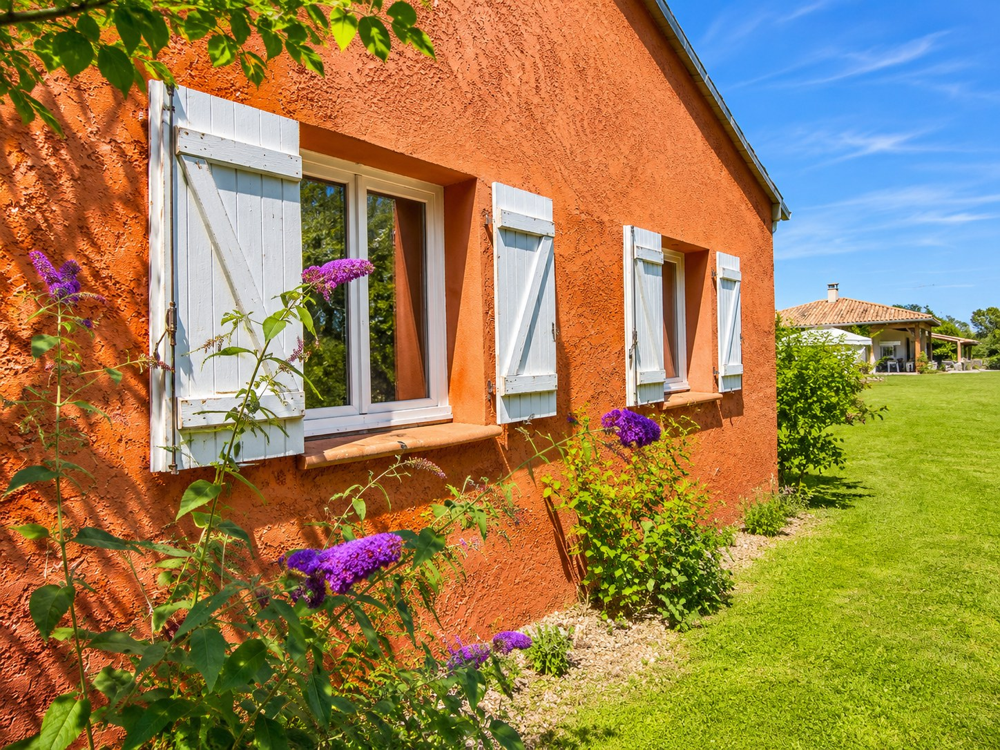
La maison des propriétaires se trouve dans un bâtiment distinct, à environ 20 mètres. Le logement dispose de sa propre entrée.
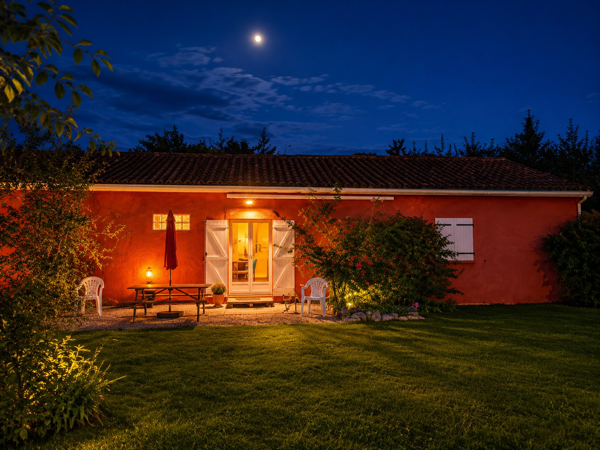
Quand le jardin s’apaise, les lumières de la maison invitent à profiter de la soirée.
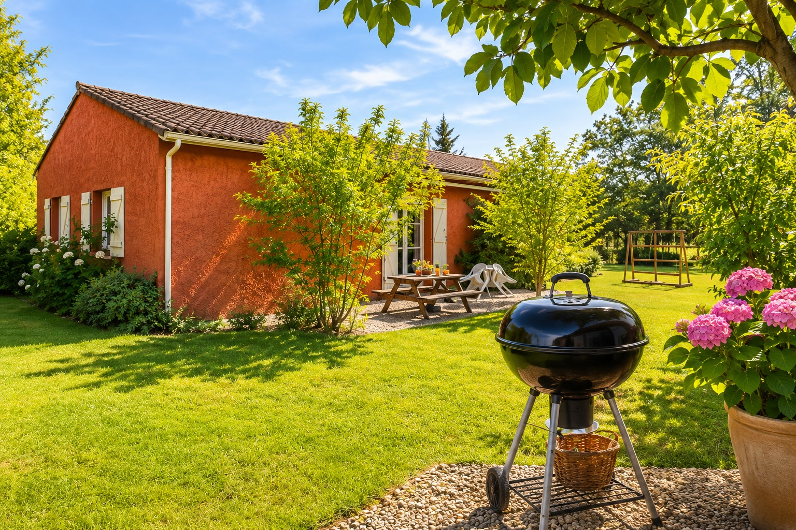
De la verdure, de l’espace et le plaisir de prendre son temps.
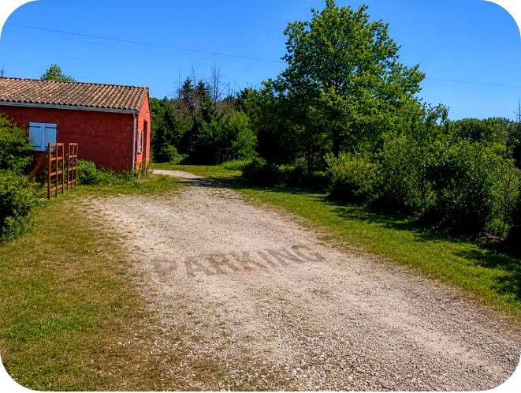
Stationnement uniquement sur les surfaces stabilisées prévues à cet effet, pour préserver les installations du terrain.
Pendant la saison estivale, profitez de notre grande piscine hors-sol de 6,20 mètres de diamètre. Des transats sont à disposition pour se détendre, écouter de la musique à volume raisonnable et savourer la douceur des vacances. Les consignes de sécurité figurent dans le livret d’accueil.
Quelques règles simples, un soupçon d’humour et beaucoup de douceur pour profiter pleinement de votre séjour. Touchez chaque rubrique pour en savoir plus.
Les réservations se font uniquement via Airbnb ou Booking.com.